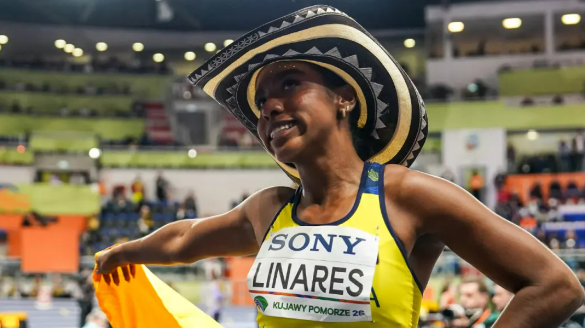
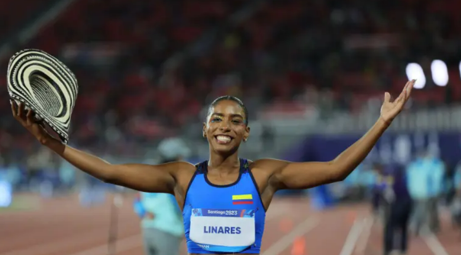

La colombiana Natalia Linares ganó la medalla de bronce en la prueba de salto de longitud del Mundial de atletismo bajo techo, este domingo en Torun (Polonia) en una prueba que dominó la portuguesa Agate de Sousa, con una marca de 6,92 en su quinto intento.
Una nueva figura que viene en ascenso
El resultado de Linares no es casualidad. En los últimos años, la atleta ha mostrado una evolución constante en su rendimiento, participando en competencias internacionales y mejorando sus marcas personales. Su proceso ha estado respaldado por un trabajo disciplinado y un enfoque claro en consolidarse dentro de la élite mundial.
Colombia ha tenido históricamente buenos representantes en el atletismo, pero en pruebas de velocidad y salto femenino, el crecimiento reciente ha sido notable. Linares hace parte de una nueva generación que busca mantener al país en los podios internacionales.

Un salto que la metió entre las mejores
Durante la competencia, Linares mostró seguridad y consistencia en cada uno de sus intentos. Su salto de 6,80 metros le permitió mantenerse en la lucha por las medallas frente a rivales de gran nivel, que llegaban con mejores registros en la temporada.
La prueba fue exigente desde el inicio, con varias atletas superando la barrera de los 6,70 metros. Sin embargo, la colombiana supo manejar la presión y aseguró su lugar en el podio con un salto preciso en uno de sus últimos intentos.
"Este resultado significa mucho para mí. Es el reflejo de años de trabajo y sacrificio, y me motiva a seguir soñando en grande y representar a Colombia en lo más alto."
— Natalia Linares, atleta colombiana
El desempeño de Linares no solo resalta por la medalla obtenida, sino por la madurez competitiva que demostró en una cita de alto nivel. Su capacidad para mantenerse concentrada y ejecutar en momentos clave fue determinante para alcanzar el podio. Además, este resultado la posiciona como una de las principales cartas del país de cara a futuras competencias internacionales, incluyendo campeonatos mundiales y eventos del ciclo olímpico.

Colombia gana una nueva carta en el atletismo mundial
Con esta actuación, Natalia Linares se consolida como una de las grandes promesas del atletismo colombiano. Su proyección invita a pensar en resultados aún más importantes en el futuro cercano, especialmente si mantiene la regularidad en sus presentaciones.
El atletismo colombiano continúa fortaleciendo su presencia internacional, y logros como este reflejan el impacto del trabajo formativo y competitivo que se viene desarrollando en el país.
Más allá de la medalla, el logro de Linares representa un mensaje claro: Colombia sigue creciendo en disciplinas que antes tenían menor protagonismo. Su actuación no solo inspira a nuevas generaciones de atletas, sino que también reafirma el potencial del país para competir al más alto nivel. El camino continúa, y todo apunta a que este es solo el inicio de una carrera llena de éxitos.